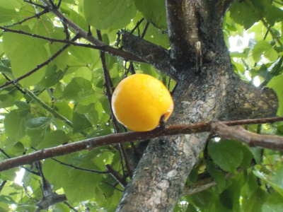
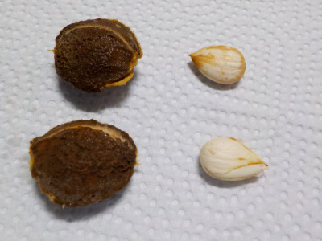
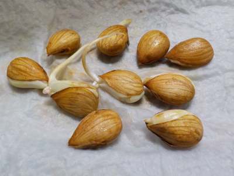
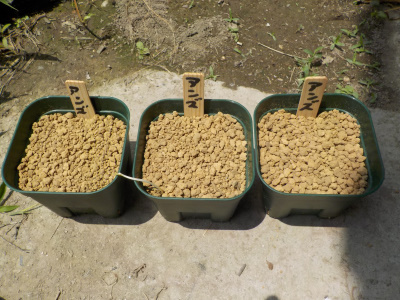
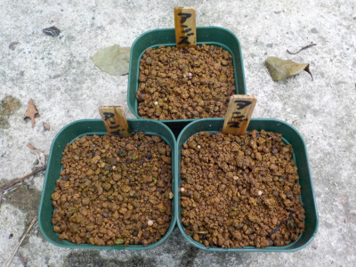

更新日 : 2020/06/14

アンズが熟れてきたので、収穫して食べています。

食べた後に残った種ですが、殻を割って実を取り出しました。
殻が硬いため、力ずくで割ると爆発したみたいになり破片が飛び散りました。
中の種はアーモンドにちょっと似ていて、おいしそうでした。
この種を育てようと思っています。
更新日 : 2020/06/20

先日採った種から、もう根っこが出ていました。
土に植えないといけないですね。
根っこが太いので、成長が速い感じがします。
更新日 : 2020/06/28

根っこが伸びたので、種を植えました。
梅雨で定期的に雨が降ると水やりが楽でいいんだけどな。
更新日 : 2020/08/09

根っこがあるので芽が簡単に出るどろうと思っていましたが、出ませんでした。
なぜでしょうね。
鉢をひっくり返してみたら細い根っこが確認出来ましたが、他の部分はありませんでした。
虫に食べられたかな。
１本くらい生き延びて欲しかったな。
アンズの実はアーモンドみたいで美味しそう。